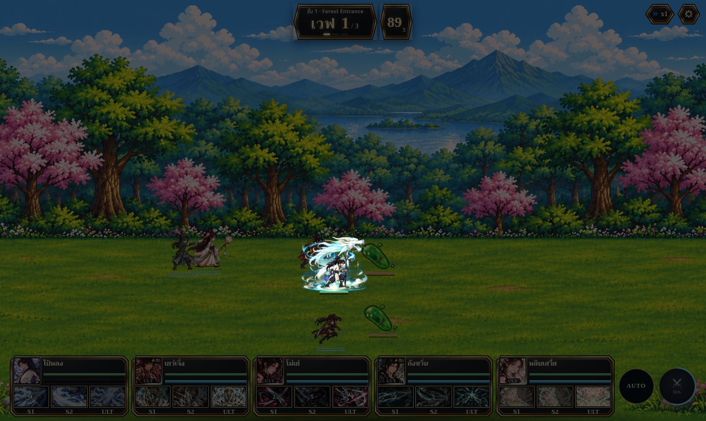
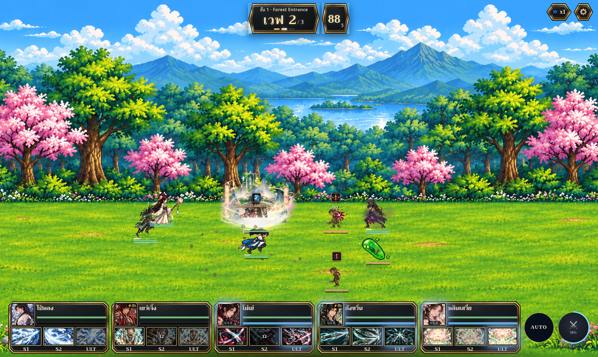

ฉากดำตลอด Ultimate · ตัวผู้ใช้อยู่ด้านหน้า
Desktop1440×860 · ภาพจากเกมจริงหลังคัตอินหาย ตัวผู้ใช้และ VFX ยังสว่างอยู่หน้าฉากดำ ตัวอื่นกับสนามอยู่ด้านหลัง จบท่าแล้วคืนฉากและใช้ Ultimate ตัวถัดไปได้
 อ้างอิง: ระดับความมืดช่วงคัตอินเดิม
อ้างอิง: ระดับความมืดช่วงคัตอินเดิม Pixi จริง: คัตอินหายแล้ว แต่ฉากดำคงอยู่ ตัวผู้ใช้กับ VFX อยู่ด้านหน้า
Pixi จริง: คัตอินหายแล้ว แต่ฉากดำคงอยู่ ตัวผู้ใช้กับ VFX อยู่ด้านหน้า
DOM fallback
จบท่าแล้วคืนฉากปกติภาพอ้างอิงแสดงคนละช่วงกับภาพใหม่โดยตั้งใจ: ผู้ใช้ขอให้ความมืดคงอยู่หลังคัตอินหาย ไม่ได้เปลี่ยนอาร์ตหรือตำแหน่งคัตอิน รายงานตรวจชั้นแสดงผลและเวลาแยกจากภาพนิ่ง ไม่มี master merge หรือ deploy